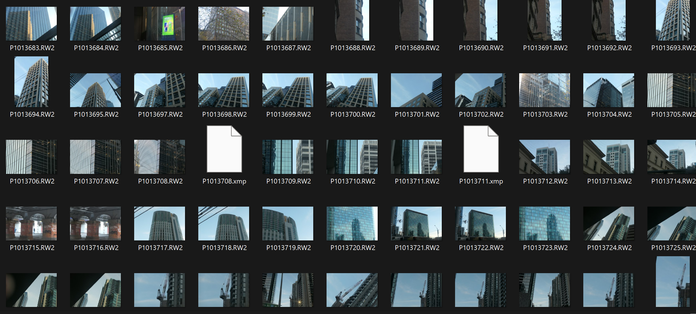
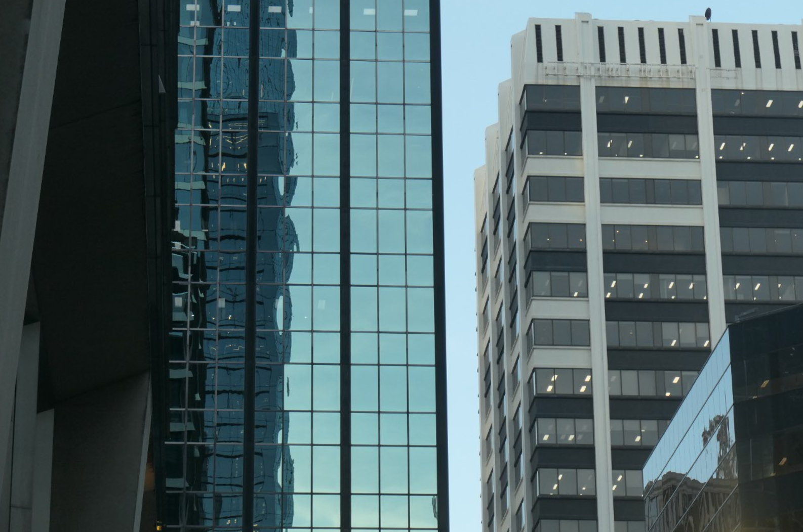
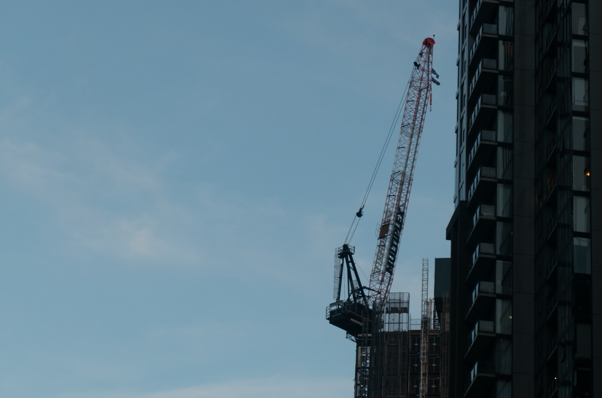
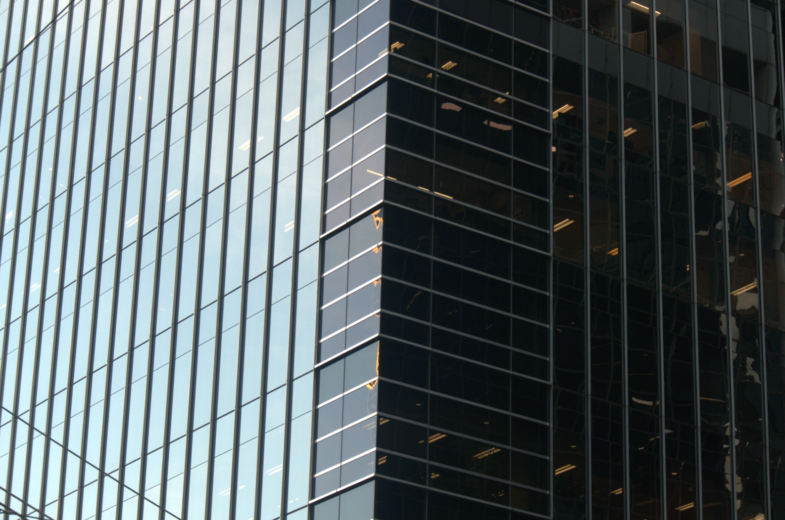
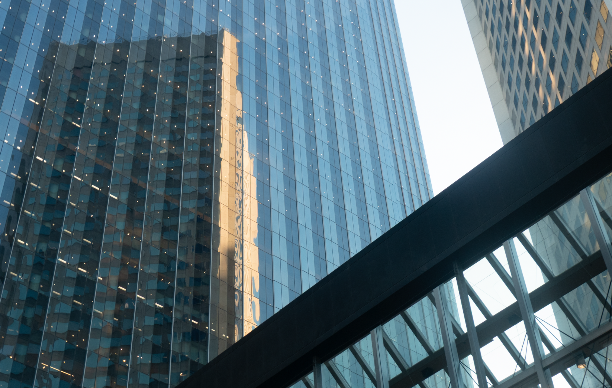
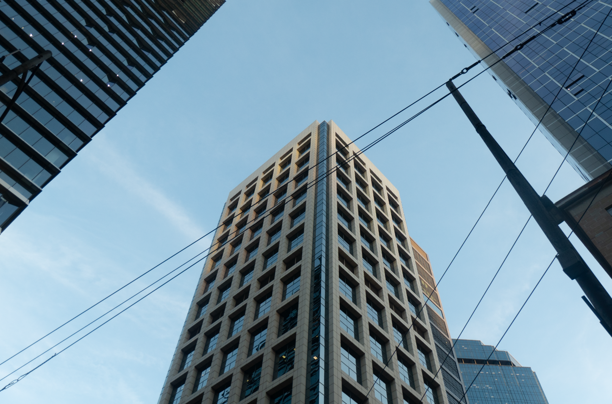
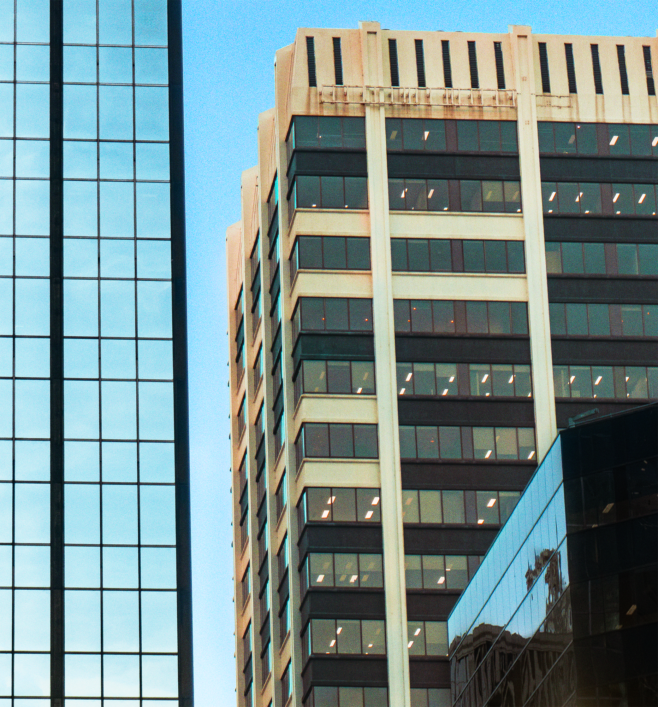
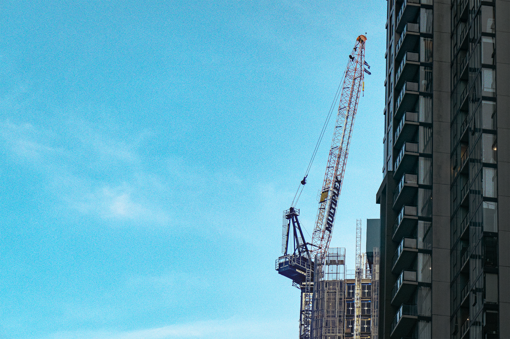
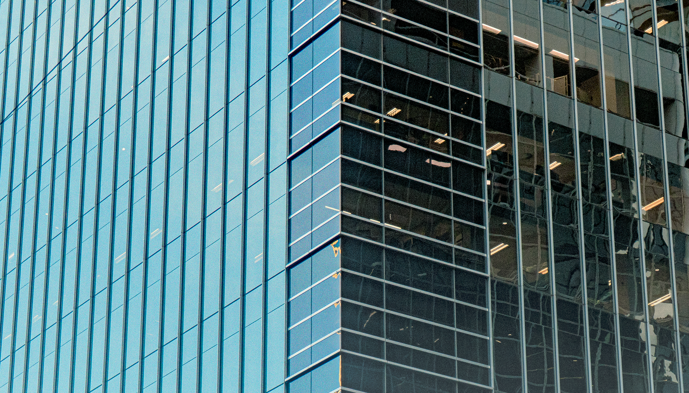
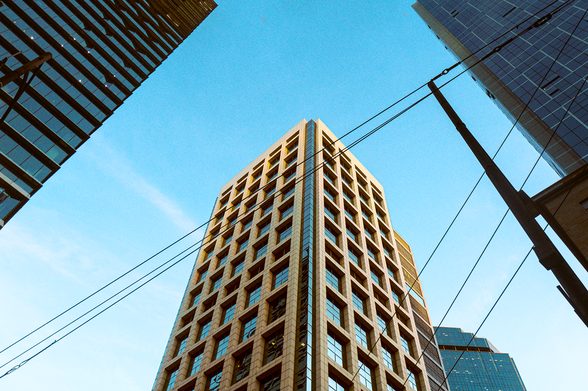

PASSING THROUGH
Made with: Lightroom • Photoshop
Passing Through explores the overlooked transitional spaces of Melbourne, focusing on the repetitive glass, metal and concrete structures that sit between the city's busy destinations and residential neighbourhoods. Through tightly cropped compositions, I isolated sections of buildings from their surroundings, emphasising their geometric forms, repetitive patterns and imposing scale. I also experimented with contrasting visual elements, placing dense architectural lines against vibrant blue skies to create a surreal sense of detachment. Together, these photographs capture the sterile and impersonal character of urban spaces designed primarily for people to pass through rather than inhabit.










